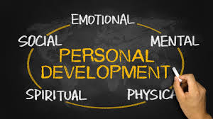

19 January 2021
Personal development is a lifelong process.
Personal development can also include developing other people's skills and personality. This may take place through roles such as those of a teacher or mentor, either through a personal competency (such as the alleged skill of certain managers in developing the potential of employees) or through a professional service (such as providing training, assessment or coaching).
Personal development as an industry[4] has several business-relationship formats of operating. The main ways are business-to-consumer and business-to-business.[citation needed] However, two newer ways have emerged: consumer-to-business and consumer-to-consumer.[5] The personal development market had a global market size of 38.28 billion dollars in 2019
Managing Your Personal Development There are a number of steps to take in managing your personal development.
1. Developing a Personal Vision
2. Planning Your Personal Development
3. Starting the Improvement Process
4. Recording Your Personal Development
5. Reviewing and Revising Personal Development Plans
Personal development can simply be for fun. Most of us, however, find it easier to motivate ourselves to learn and improve if we have a purpose in doing so. Developing your personal vision - a clear idea of where you want to be in a few months or years, and why - is a crucial part of developing this purpose
Once you are clear about where you want to be, you can start planning how to get there. Drawing up a personal development plan is not essential, but it does make the planning process more realistic.
There are a number of ways in which you can start to work on areas of weakness. In drawing up a plan for your personal development, it can be helpful to include several different methods to address problems. This helps to maintain interest. Options include: Formal courses or learning opportunities, whether leading to qualifications or not; More informal learning experiences such as reading, mentoring or shadowing (and see our page on Learning from Mentoring for more about this); Applying your formal learning deliberately in a particular situation, to see what happens; and Direct learning from your own experience, through a process of reflection (see our page on Reflective Practice for more) and expertise transfer
The idea of a learning style is that we all have a way in which we prefer to learn. For example, some people like to sit down and read about a subject while others prefer to get on and have a go at it. However, it’s not usually quite as clear-cut as this since preferences can change over time and as you are required to do different things at work and in life more generally. However, an understanding of your preferred learning style may help you to find new ways of studying that better work for you.